第一话「欢迎来到Liella!」
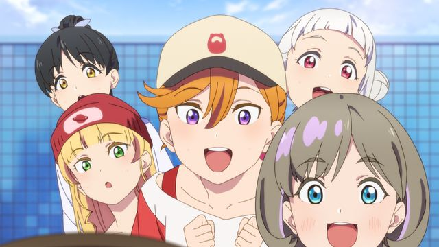
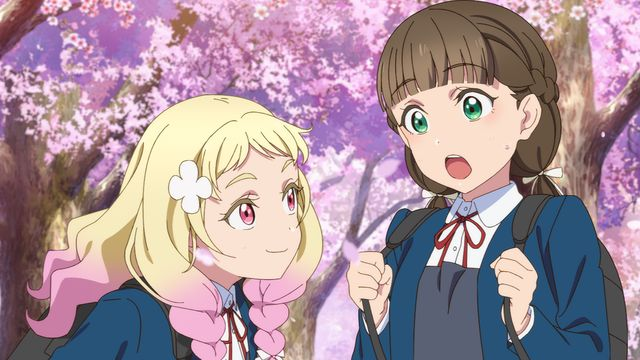
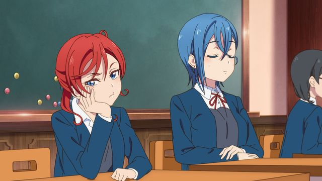
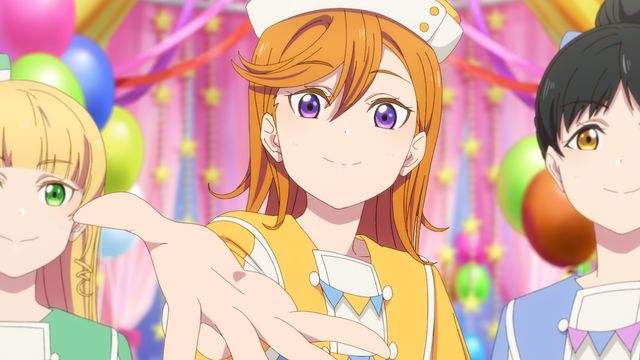
新学期开始的结丘女子高等学校。
Liella!一如既往地在屋顶练习的时候，一名少女被她们的声音所吸引。
她的名字叫樱小路希奈子，是今年入学结丘的新生。
无论如何都很在意屋顶上传来的声音的希奈子，潜入学校，朝着声音的源头走去。
希奈子小心翼翼地在屋顶门口看到了Liella!她们那有默契的表演的样子——。
第二话「二年级生与一年级生」
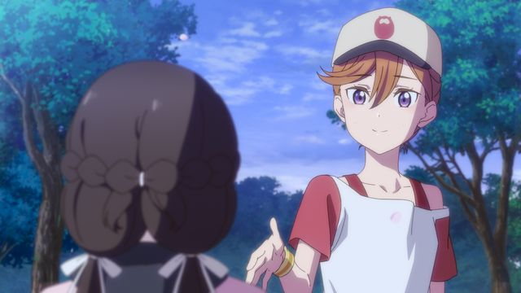

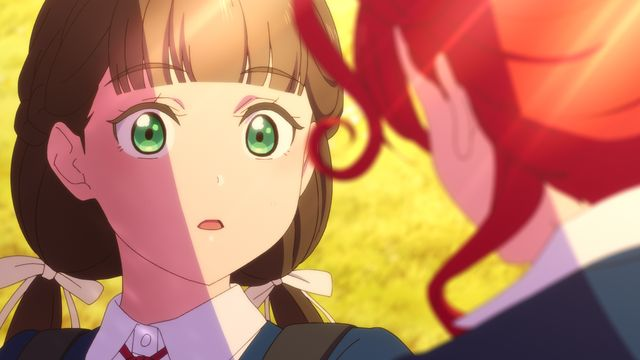
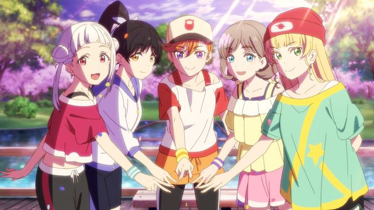
希奈子加入后，Liella!的成员就变成了6人！但是，自从希奈子加入后，学园偶像部的新成员一直都没有出现。据她说，原因是传言说她们的训练很辛苦。
因此为了更容易招募新成员，Liella!决定减轻训练计划。
但是，虽然以LoveLive!冠军为目标，但训练计划的水平却有所下降，这让香音感到很不适应——。
第三话「夺冠热门」
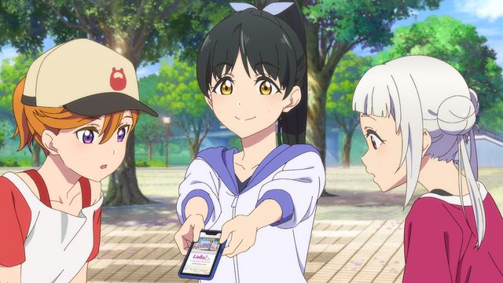
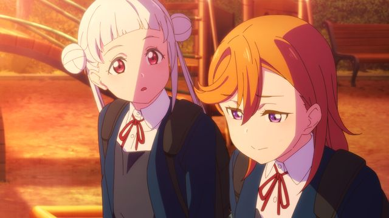
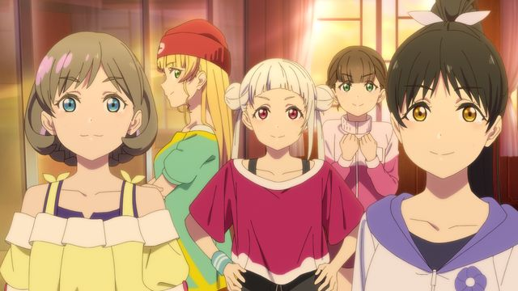
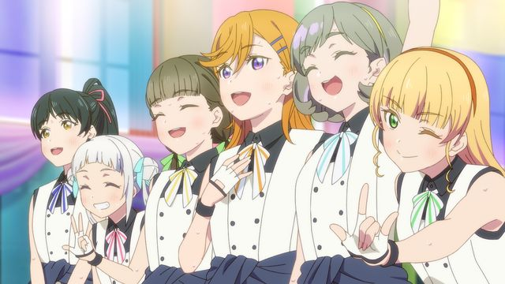
去年也被邀请参加学园偶像节的Liella!这次是压轴出场。
第一次登上大舞台的紧张的希奈子。
这时，舞台上响起了充满压迫感的歌声。薇恩・玛格丽特。
结果Liella!虽然获得了特别奖，但与冠军失之交臂。获得冠军的是玛格丽特。
玛格丽特对香音说:“LoveLive!好像也不是那么厉害的比赛……”，说完就离开了。
第四话「实验室的两人」
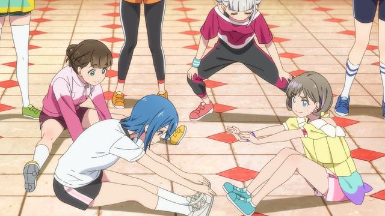
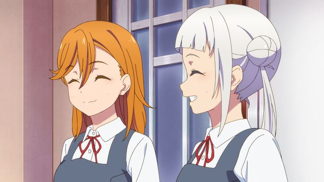
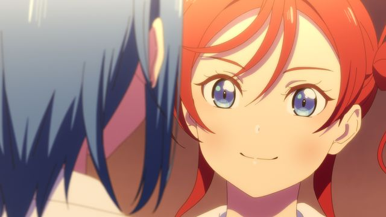
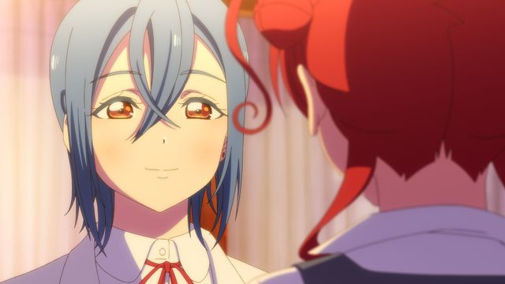
一年级的若菜四季，再也不忍心看到非常喜欢学园偶像却因为害怕而不愿意加入学园偶像部的同年级的米女芽衣的样子。
最终她想到了一个可以帮助芽衣的作战计划。
她以体验入部的名义加入了学园偶像部，并让芽衣看到她在学园偶像部的日常活动。
芽衣看到了在屋顶和Liella!一起练习的四季后慌了，连忙焦急地朝她们所在的屋顶走去，但是因为害怕又悻悻而归。
随后四季跟Liella!说了有关芽衣的事情——。
第五话「金钱轮流转」
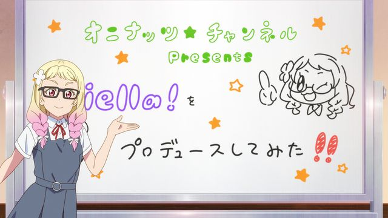
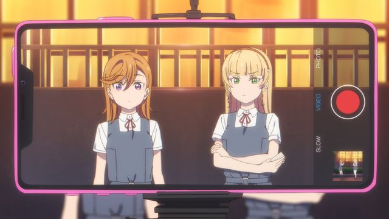
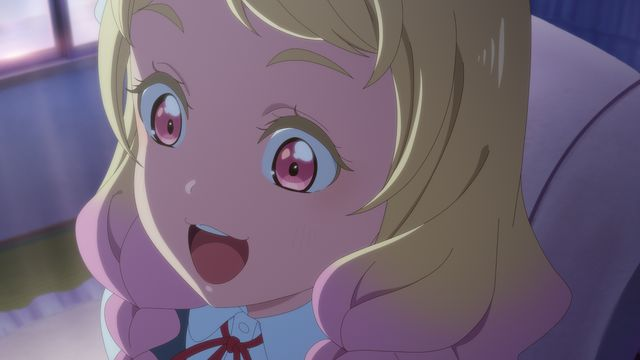
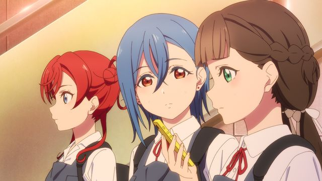
四季和芽衣加入后，Liella!已经拥有了8位成员。
在这之后，Liella!的最有人气的一年级生，鬼塚夏美出现了。夏美出于个人兴趣正从事着发布视频和直播相关的工作，还自称为CEO。因此这次说是想用视频来帮助宣传Liella!。
如果把宣传的事交给成员以外的人，Liella!就可以专心训练，所以这并不是什么坏事。
Liella!觉得夏美的话很有道理，但是，堇却觉得夏美帮助Liella!的行为很可疑——。
第六话「DEKKAIDOW!」
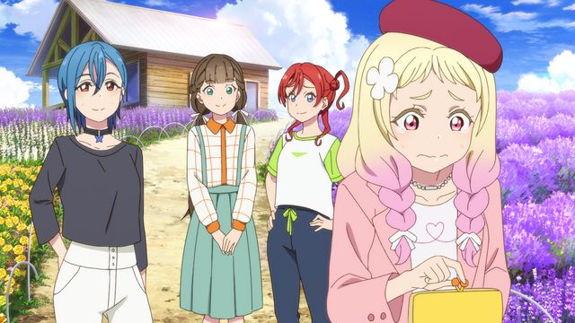
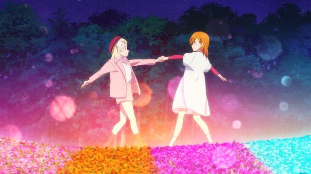
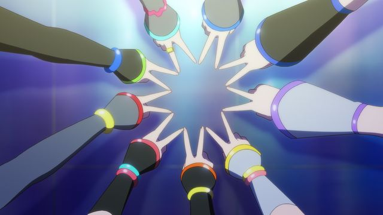
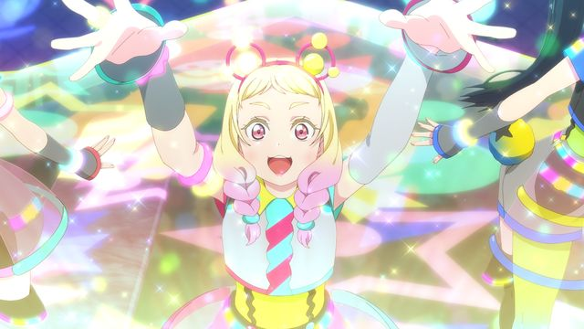
香音对于一年级生们决定在暑假期间将独自进行训练这件事非常在意。
其他的二年级生们鼓励着香音，一年级生们有自己独自训练的想法未必不是一件好事。
香音虽然还是放心不下，但她还是选择相信大家。
另一方面，一年级生们和夏美一起来到了希奈子的老家北海道进行集训。
和一年级生们一起集训的夏美也逐渐吐露了自己的想法，因为自己没有梦想，所以只能努力赚钱——。
第七话「UR 叶月恋」
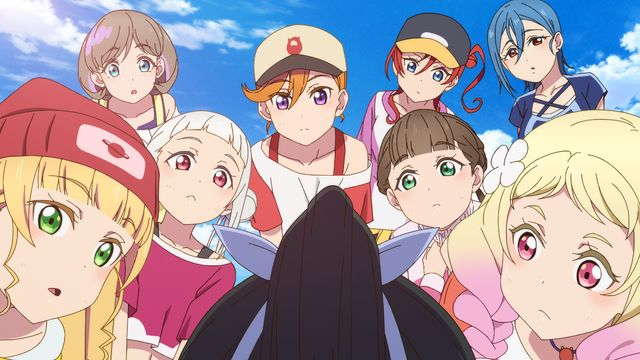
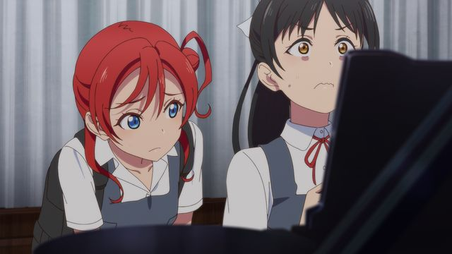
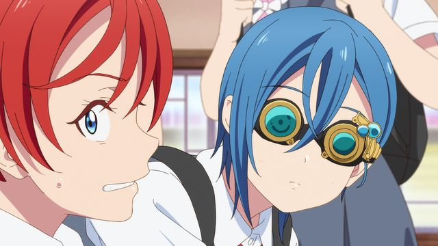
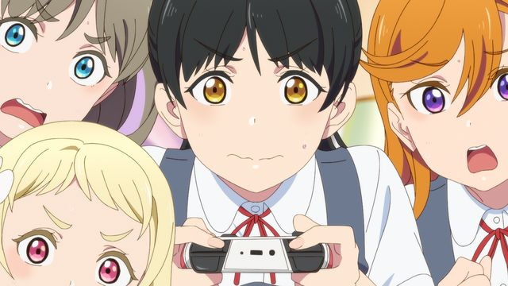
在夏美加入后，Liella!的成员增加到9人。这时LoveLive!也宣布了新一届大赛开始的消息。
因为这次大赛的歌曲主题由自己自由选择，所以大家都在一起努力制作LoveLive!大赛的出场用的新歌。但是，独自一人处理学校大小事务的恋的疲劳值也达到了顶峰。
最后恋决定负责歌曲的作曲和钢琴部分，但是芽衣却发现恋的样子好像不太对劲…
然而芽衣在偶然经过音乐教室的时候，无意间发现了恋的秘密…
第八话「Chance Way」
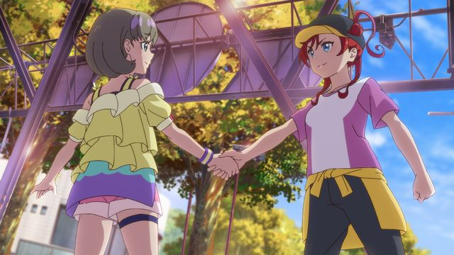
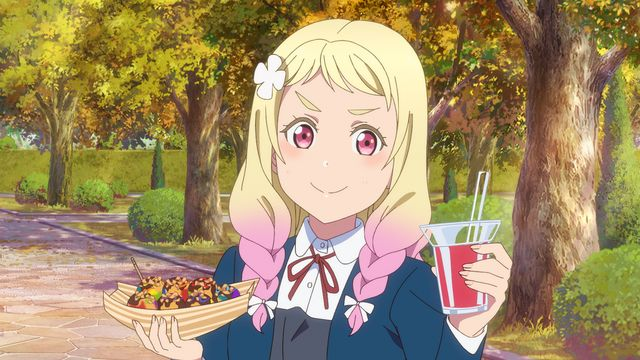
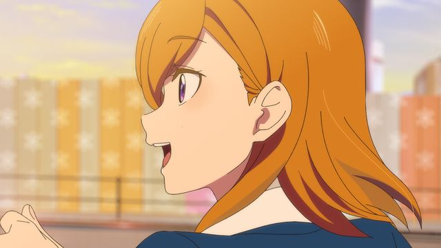
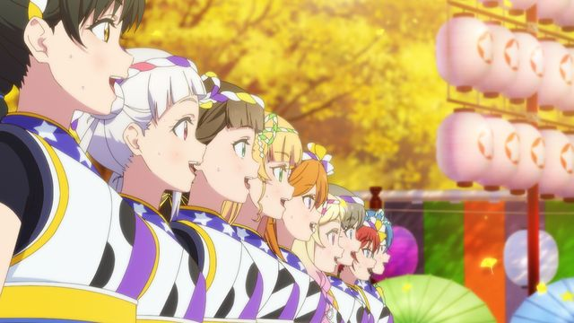
Liella!开展了对LoveLive!大赛的作战会议，今年的LoveLive!大赛比赛形式为线上比赛，歌曲曲目自选。
歌曲制作的重要性自然不必多说，但是要想在众多参赛的团体中脱颖而出，舞台的搭建同样也很重要。
可以很好的表示Liella!和结丘女子高等学校的舞台……
香音为了搭建出这样的舞台，在努力思考着可以象征结丘的东西。
会在这个城市和这个街道上建立结丘，这之间一定有着某种联系，某种意义……
第九话「为了胜利」
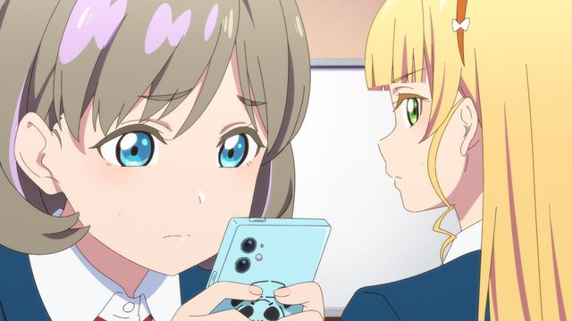
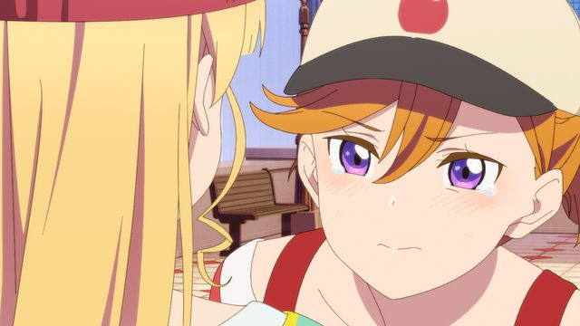
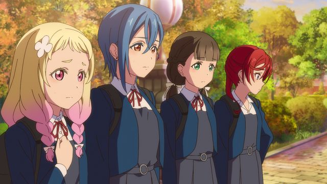
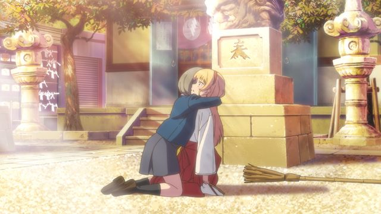
Liella!成功通过了LoveLive!的地区选拔赛。
但是千砂都悄悄地告诉2年级生，1年级生和2年级生之间有相当大的实力差距。
1年级生确实很努力，但这样下去恐怕很难进入决赛。
该怎么办……大家都很烦恼，可可却说现在这样就好。
1年级生她们已经很努力了，现在跟她们说的话，她们会努力过头的吧…唱歌也会变得痛苦。
看着这样的可可，堇似乎有点不满……
第十话「响彻涩谷的歌」
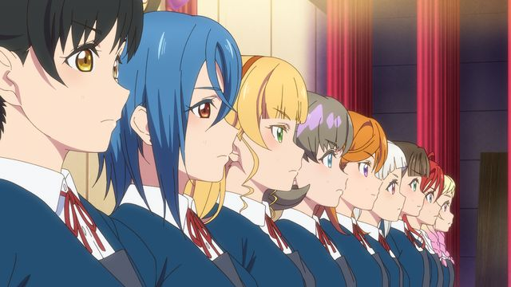
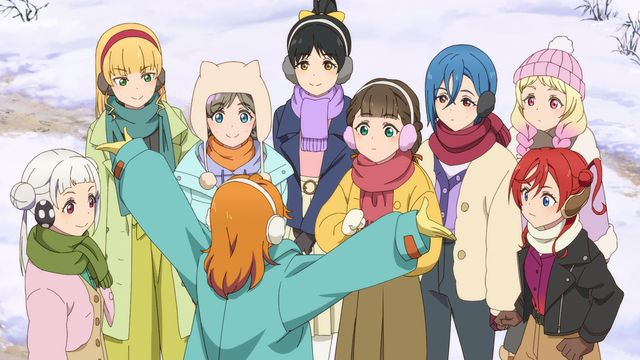
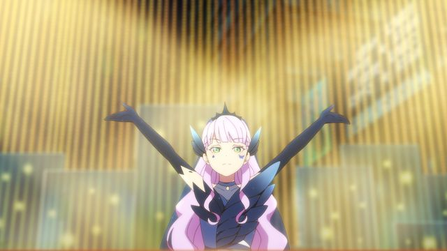
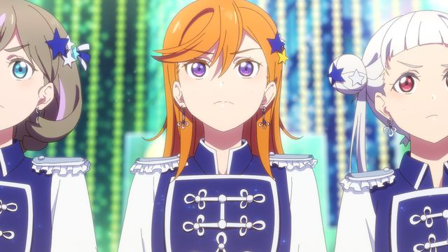
为了进入决赛，9人来到了希奈子的老家集训。
为了拉近成员间的距离，这次的曲子和舞蹈全部都是由1年级生和2年级生共同制作的。
虽然一开始很迷茫，但是1年级生们逐渐地开始互相提出自己的想法。
在这之中，香音正在烦恼「可以表达她们的歌」是什么……
她一直纠结着玛格丽特以前说过的那句“我会告诉你什么才是真正的歌曲”。
这时香音想起了一件事……
第十一话「梦想」
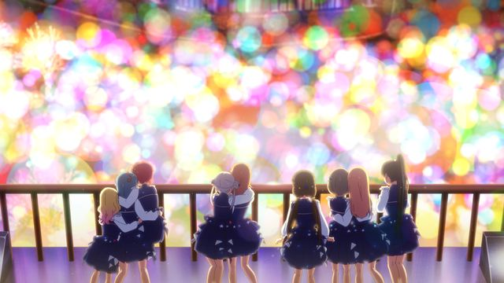
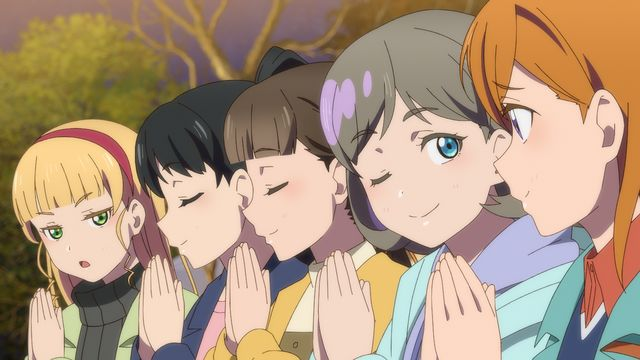
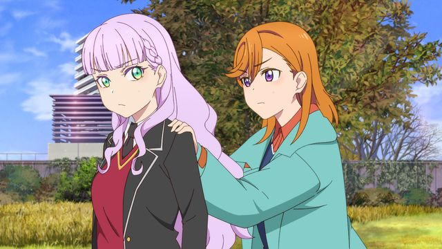
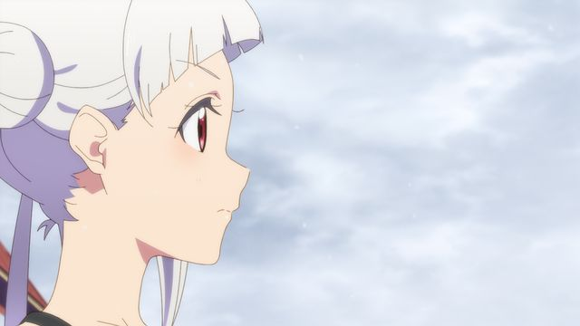
Liella!完美地赢得了东京大会的胜利，但是，无法接受现实的玛格丽特离开了比赛场地。
另一方面，Liella!的9人在香音的家里开庆功宴。不知不觉间，新年就要开始了。
9人在堇的老家的神社里许愿“希望可以唱出好的歌曲”。
在此期间，香音很好奇玛格丽特为什么会来到日本参加LoveLive!大赛。
这时，香音通过网络得知玛格丽特此时就在附近————。
第十二话「实现自我的故事」
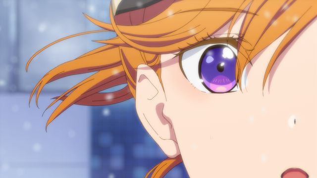
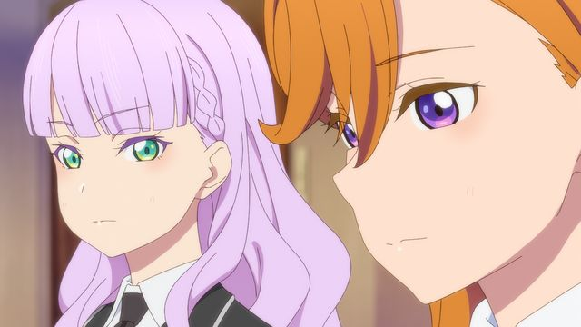
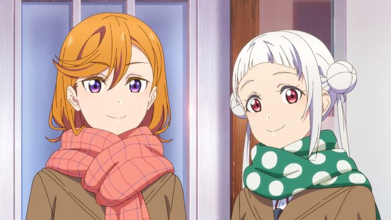
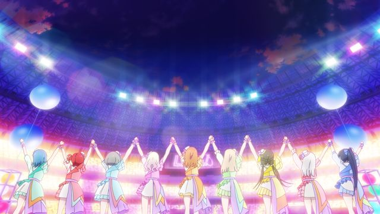
校长劝香音转学去维也纳国际音乐学校，香音对自己的未来感到迷茫。
为了香音能够实现把歌声传递到全世界的梦想，千砂都也劝香音还是去维也纳留学比较好。但是香音放心不下Liella!的其他人，还是决定留下来。
晚上，香音接到千砂都的电话，让她去学校一趟。
在学校里，不仅只有千砂都，还有Liella!的大家都在————。